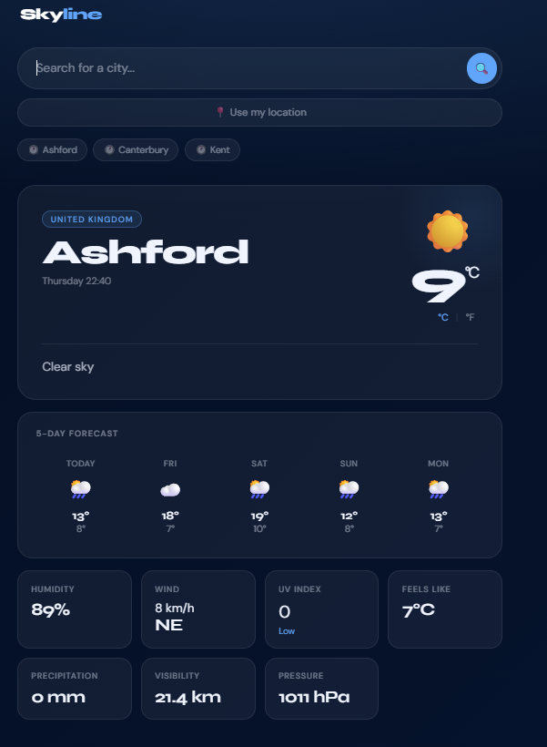
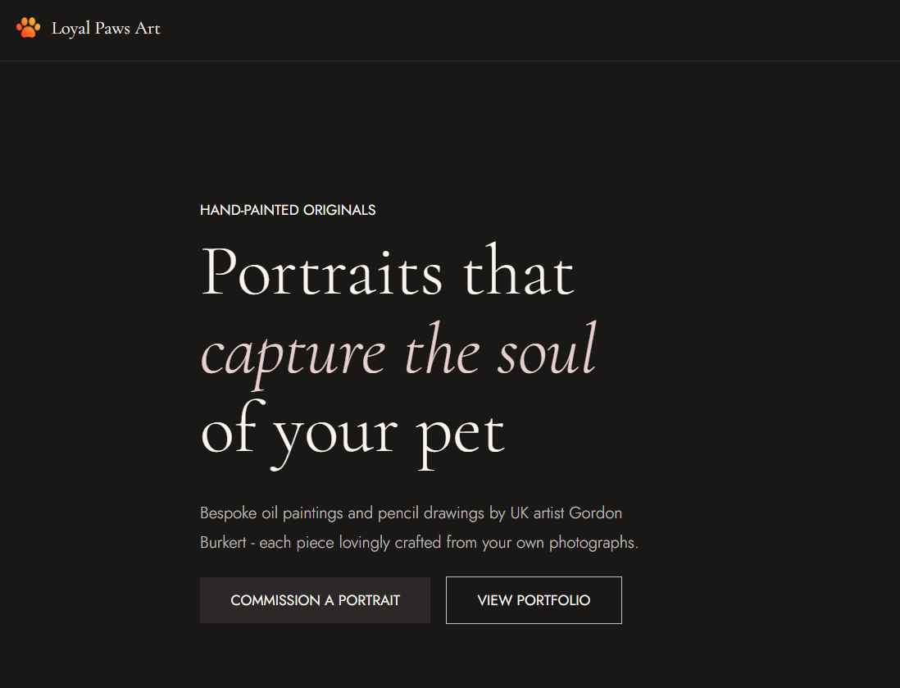
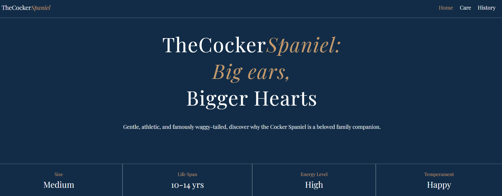

My Expertise
Software Development
Building applications using Python, JavaScript, and TypeScript with a focus on clean, maintainable code and solid OOP principles. Experience working on backend logic, APIs, and automation.
Frontend Development
Creating responsive and accessible interfaces using HTML, CSS, and JavaScript. Focused on UI/UX, mobile-first design, and interactive web experiences.
Database Development
Working with SQL and NoSQL databases, including schema design, queries, and data optimisation. Familiar with relational and document-based systems.
My Work
Deployed scalable travel, event, and telemedicine web and hybrid mobile applications. Developed responsive front-end interfaces, integrated REST APIs, and supported backend services to deliver reliable, production-ready systems. Focused on performance optimisation, accessibility, and cross-platform consistency.
3+ projects
SkyLine Weather App
Skyline Weather is a responsive weather forecasting web application designed to provide real-time weather information and a clean, user-friendly experience. Users can search for cities worldwide or use their current location to instantly access current conditions and a 5-day forecast.

Loyal Paws Art is a creative digital art portfolio and commission platform focused on celebrating pets through custom illustrations and expressive character artwork. The project showcases a visually engaging design with an emphasis on personality, emotion, and stylized animal art.

The Cocker Spaniel is a responsive web application designed to showcase the breed's unique characteristics and care requirements. The project features a clean, modern design with an emphasis on user engagement and information accessibility.
Experience
Delivering 2nd line technical support for 500+ users across a 24/7 maritime estate. Responsibilities include Microsoft 365 and Azure AD administration, full-lifecycle hardware deployment across terminal zones, network diagnostics involving TCP/IP and VLANs, and incident resolution via ServiceNow. Maintaining strict endpoint security and compliance with UK maritime regulations.
Managed all core network services including routers, switches, firewalls, and Wi-Fi access points. Administered hybrid cloud infrastructure using Active Directory, Azure, Intune, and Office 365. Executed network upgrades and configuration changes while maintaining accurate documentation and enforcing timely patching across all devices.
Oversaw all IT operations including helpdesk management and hybrid infrastructure administration across Active Directory, Azure, and Office 365. Managed network infrastructure including VLANs and backup processes, and delivered key projects including OneDrive and SharePoint migrations alongside custom internal solutions.
Provided daily hardware, software, and server support while managing core network infrastructure and user administration via Active Directory and Group Policy. Handled Office 365 and SharePoint requests and managed student and staff mobile devices using Lightspeed MDM.
Field engineer role covering installation and maintenance of copper telephone infrastructure. Responsibilities included wiring telephone poles and PCPs, connecting copper cabling to customer premises, laying underground cables, and troubleshooting telephone connectivity faults.
Let's Work Together
Open to freelance projects, collaboration, and full-time opportunities. Drop me an email and I'll get back to you.
Willburkert96@gmail.com